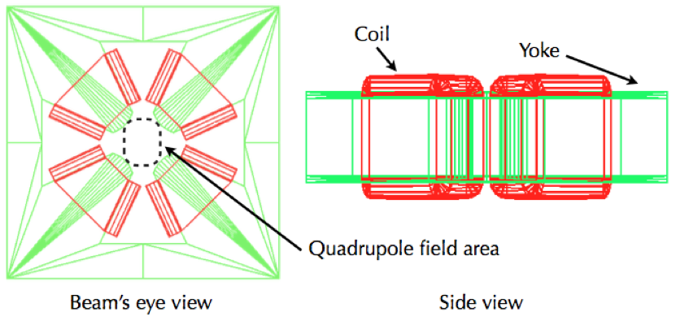
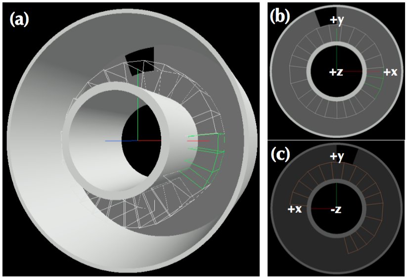
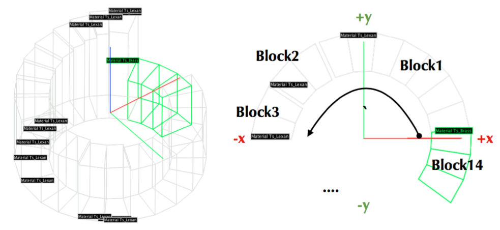
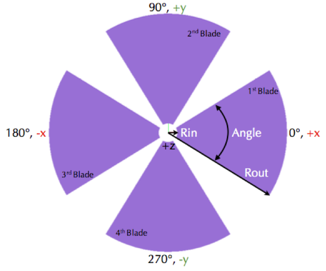
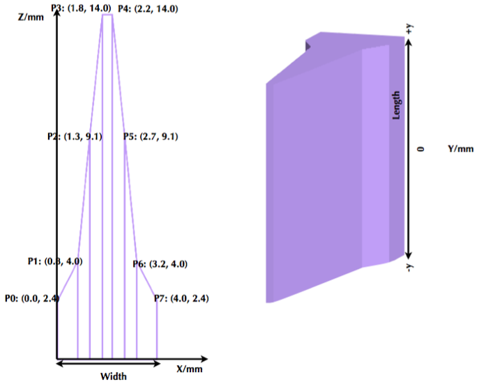
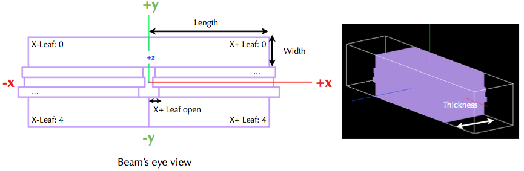
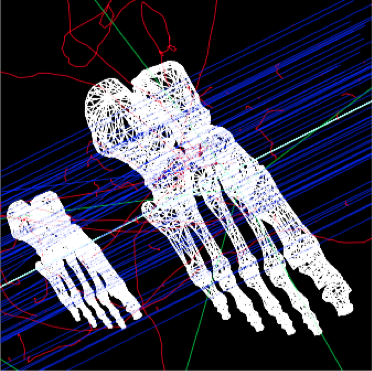
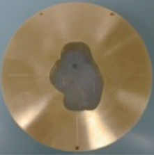
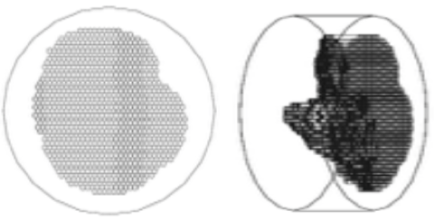

Specialized Components¶
Geometry Component |
Type |
|---|---|
TsRangeModulator |
|
TsPropeller |
|
TsRidgeFilter |
|
TsMultiWireChamber |
|
TsJaws |
|
TsMultiLeafCollimator |
|
TsDivergingMLC |
|
TsCAD |
|
TsAperture |
|
TsCompensator |
|
TsBrachyApplicator |
|
TsPixelatedBox |
|
TsEye |
|
TsEyePlaque |
Each of the specialized components has its own set of special parameters. Usage is best learned by studying the relevant examples parameter files included in TOPAS.
You may write your own additional components (see Custom Geometry Components).
The following figure from Samsung Medical Center shows how their very specific quadrupole magnet system was coded as an TOPAS geometry.
Range Modulator Wheel¶
The TOPAS Range modulator is designed to accommodate various vendor specifications. We suggest modeling your Range Modulator Wheel (RMW) using the following procedure:
Define the dimensions of the RMW drum, such as the thickness and material of the shell and hub (see the figure below). Tracks will be placed in between the hub and the shell.
This space (in between the hub and the shell) is vertically divided into three sections named, “Upper”, “Middle”, and “Bottom” such that each section can have its own tracks. You can adjust the heights of these sections. The sum of these heights is the total height of your RMW.
In order to reserve spaces for the tracks, divide each section radially into as many as tracks you want by using the
RadialDivisionparameter.Assign a name to the
Patternparameter for each track. Vector parameters are then used to define that named pattern’s height, span angle, and material.
The above figure illustrates the dimensions of the TOPAS. Tracks are placed in between the “Rout” of the Hub and the “Rin” of the Shell. This is the area that is to be radially divided in the case of multiple tracks. There are three vertical sections “Upper”, “Middle”, and “Bottom” make it possible to have double sided RMWs with an interface disk.
The above figure depicts an example RMW, with a perspective view shown in panel (a). The upper section is divided in two but only the inner radial division has a track pattern. In the middle section, two track patterns are used to make a hole. Panel (b) depicts an X-Y view in the +Z direction of the RMW, and panel (c) depicts the same view from the -Z direction. Tracks are drawn in wireframe style, resulting in more lines on the tracks being shown than the number of blocks.
Here is the complete set of the parameters for the above RMW (see the RangeModulator.txt example):
# Common parameters: type of geometry, position, and rotation
s:Ge/RangeModulatorA/Type = "TsRangeModulator"
s:Ge/RangeModulatorA/Material = "Parent"
s:Ge/RangeModulatorA/Parent = "World"
d:Ge/RangeModulatorA/TransX = 10.0 cm
d:Ge/RangeModulatorA/TransY = 0.0 cm
d:Ge/RangeModulatorA/TransZ = 0.0 cm
d:Ge/RangeModulatorA/RotX = 0.0 deg
d:Ge/RangeModulatorA/RotY = 0.0 deg
d:Ge/RangeModulatorA/RotZ = 0.0 deg
b:Ge/RangeModulatorA/Invisible = "True"
# Set height of each sections and total height = 160.0 mm
d:Ge/RangeModulatorA/HeightOfUpper = 150 mm
d:Ge/RangeModulatorA/HeightOfMiddle = 1.0 mm
d:Ge/RangeModulatorA/HeightOfLower = 9.0 mm
# Shell dimensions, material, color, etc.
d:Ge/RangeModulatorA/Shell/Rin = 15.0 cm
d:Ge/RangeModulatorA/Shell/Rout = 15.5 cm
s:Ge/RangeModulatorA/Shell/Material = "Aluminum"
s:Ge/RangeModulatorA/Shell/Color = "grey"
s:Ge/RangeModulatorA/Shell/DrawingStyle = "Solid"
i:Ge/RangeModulatorA/Shell/VisSegsPerCircle = 360
# Hub dimensions, material, color, etc.
d:Ge/RangeModulatorA/Hub/Rin = 6.0 cm
d:Ge/RangeModulatorA/Hub/Rout = 7.0 cm
s:Ge/RangeModulatorA/Hub/Material = "Aluminum"
s:Ge/RangeModulatorA/Hub/Color = "grey"
s:Ge/RangeModulatorA/Hub/DrawingStyle = "Solid"
i:Ge/RangeModulatorA/Hub/VisSegsPerCircle = 360
# Setting tracks on Upper area
# Two tracks Track1 (7.0 cm ~ 11.0 cm) and Track2 ( 11.0 cm ~ 15.0 cm)
dv:Ge/RangeModulatorA/Upper/RadialDivisions = 1 11.0 cm
# Assignment of track pattern of Upper area
# Track1 refers the pattern named "LexanBlockT1" whose vector parameters are defined elsewhere (see below).
s:Ge/RangeModulatorA/Upper/Track1/Pattern = "LexanBlockT1"
s:Ge/RangeModulatorA/Upper/Track2/Pattern = "NULL" #NULL means empty track.
# Track1 pattern: 14 blocks of Lexan.
# Numbers of Angles, Heights, and Materials should be same.
d:Ge/LexanBlockT1/Offset = 0.0 deg #means shift of zero-angle
# Angle divisions. The first block’s spans from 5.0 deg to 115.0 deg.
# The last block starting at 324.0 deg spans to the first block’s boundary.
# This case last block spans from 324.0 deg to 360.0 + 5.0 deg
dv:Ge/LexanBlockT1/Angles = 14
5.00 115.00 146.50 173.2 195.07
216.15 230.14 243.00 255.5 270.60
282.20 294.60 306.20 324.00 deg
# Height of each block.
# Note that zero height means that no block in that angle range.
dv:Ge/LexanBlockT1/Heights = 14
77.0 82.0 87.0 92.15 95.0
100.4 106.0 110.2 115.3 119.5
124.0 128.8 132.00 60.0 mm
# Material of each block.
sv:Ge/LexanBlockT1/Materials= 14
"Lexan" "Lexan" "Lexan" "Lexan" "Lexan"
"Lexan" "Lexan" "Lexan" "Lexan" "Lexan"
"Lexan" "Lexan" "Lexan" "Brass"
Other tracks can be similarly configured. In accordance with the above block of code, “Track1” on the “Upper” area looks like the figure below, where the image on the left shows a view of the complete set of tracks, while the figure on the right depicts the counterclockwise construction of the blocks.
The PrintInformation boolean parameter can be set to "True" to print out the angle, height, and material of each block to the concole:
b:Ge/RangeModulatorA/PrintInformation = "True" #Print out specification, see below
---UpperTrack1 , # of Blocks: 14
0th Block
Angle : 5, 115 deg
Height : 7.7 cm
Material: Ts_Lexan
1st Block
Angle : 115, 146.5 deg
Height : 8.2 cm
Material: Ts_Lexan
2nd Block
Angle : 146.5, 173.2 deg
Height : 8.7 cm
Material: Ts_Lexan
3rd Block
Angle : 173.2, 195.07 deg
Height : 9.215 cm
Material: Ts_Lexan
4th Block
Angle : 195.07, 216.15 deg
Height : 9.5 cm
Material: Ts_Lexan
...
Given that the TOPAS RMW is a specialized geometry, it only allows rotations around the Z-axis in addition to propeller rotations. The two examples RangeModulator_ConstantBeam.txt and RangeModulator_CurrentModulatedBeam.txt demonstrate how RMW rotation and beam current modulation using Time Features can be performed.
Propeller¶
A propeller is a component widely used to modulate the range of Bragg peaks. TOPAS currently supports a symmetrical propeller, i.e., each blade has the same shape but in different placements. Users can specify the number of blades with a spanning angle, thickness and materials of each layer. Here is an example of a single-layer propeller having 4 blades.
Each blade is constructed in the counterclockwise order. The figure shows its shape with coordination system.
Here is the complete set of the parameters for the above Propeller:
# Common parameters: type of geometry, position, and rotation
s:Ge/PropellerA/Type = "TsPropeller" #TsPropeller as type of geometry
s:Ge/PropellerA/Parent = "World"
s:Ge/PropellerA/Material = "Parent" #This is required to be set as "Parent"
d:Ge/PropellerA/TransX = 0.0 cm
d:Ge/PropellerA/TransY = 0.0 cm
d:Ge/PropellerA/TransZ = 0.0 cm
d:Ge/PropellerA/RotX = 0.0 deg
d:Ge/PropellerA/RotY = 0.0 deg
d:Ge/PropellerA/RotZ = 0.0 deg
b:Ge/PropellerA/Invisible = "True" #To avoid visualize propeller’s mother volume.
i:Ge/PropellerA/NbOfBlades = 4 #Number of blades
d:Ge/PropellerA/Rin = 10.0 mm #Inner radius, Rin in the figure
d:Ge/PropellerA/Rout = 127.5 mm #Outer radius, Rout in the figure
dv:Ge/PropellerA/Thickness = 1 0.356 mm #thickness.
dv:Ge/PropellerA/Angles = 1 63.15 deg #span angle of each blade.
sv:Ge/PropellerA/Materials = 1 "G4_POLYVINYL_ACETATE" #material.
# Visualization attributes setting
s:Ge/PropellerA/Blade/Material = Ge/PropellerA/Material
s:Ge/PropellerA/Blade/Color = "skyblue"
s:Ge/PropellerA/Blade/DrawingStyle = "Solid"
i:Ge/PropellerA/Blade/VisSegsPerCircle = 360
# you can apply a propeller specific step size
d:Ge/PropellerA/Blade/MaxStepSize = 10 mm
b:Ge/PropellerA/PrintInformation = "True" #Print out specification, see below
While TOPAS starts to build the geometries, you can confirm whether the numbers you specified are input properly by looking at the console output, which should look like the following:
Layer: "0" , Thickness: 0.0356 (cm), Angle: 63.15 (deg), Material: G4_POLYVINYL_ACETATE
Blade "0", Angle (-31.575 deg, 31.575deg)
Blade "1", Angle (88.425 deg, 151.575deg)
Blade "2", Angle (208.425 deg, 271.575deg)
With a different numbers of blades, the angle of each blade will look like the figure below, where the image on the left corresponds to Ge/PropellerA/NbOfBlades = 2 and the image on the right corresponds to Ge/PropellerA/NbOfBlades = 3.
You can model a multiple layered propeller by extending the vector parameters Thickness, Angles, and Materials as shown in the block of code below:
dv:Ge/PropellerA/Thickness = 10
0.5 0.6 0.7 0.8 0.9 1.0 1.1 1.2 1.3 1.4 mm
dv:Ge/PropellerA/Angles = 10
63.15 54.15 46.450 40.65 35.85 31.8 28.1 24.725 21.8 19.1 deg
sv:Ge/PropellerA/Materials = 10
"Lexan" "G4_WATER" "G4_POLYVINYL_ACETATE" "G4_POLYVINYL_ACETATE"
"G4_POLYVINYL_ACETATE" "G4_POLYVINYL_ACETATE" "G4_POLYVINYL_ACETATE"
"G4_POLYVINYL_ACETATE" "G4_POLYVINYL_ACETATE" "G4_POLYVINYL_ACETATE"
For more details, see the Propeller.txt example.
Layers are created in the order of the parameter vector, i.e., Lexan is the bottom layer in this case, followed by the G4_WATER layer, and so on and so forth. It is possible to assign each layer a different thickness, angle, and material. Note that these three vector parameters need to have same number of elements.
The TOPAS propeller only allows rotations around the Z-axis, meaning that you can only assign rotation Time Feature’s to RotZ, i.e. Ge/PropellerA/RotZ = Tf/ContinuousRotation/Value. The examples Propeller_ContinuousRotation.txt and Propeller_StepRotation.txt demonstrate how propeller rotations are handled.
Ridge Filter¶
A ridge filter is an energy modulation component used in proton therapy. TOPAS offers a generic way to model an arbitrary shape of a ridge and place the replica. The shape of a ridge is defined in the X-Z plane and then it becomes a volume by extending in the Y direction.
In the above figure, the image on the left depicts a ridge shape in the X-Z plane, represented by the connected points. Because the connection starts at the origin (X = 0) and ends at the last point (X = width), users need to first define the width of a ridge. Depending on the topology of the points, the arbitrary shape can be constructed. The right image depicts a complete ridge by extending the shape along the Y axis. Here is a complete set of the parameters for the above ridge filter (see the RidgeFilter.txt example):
# Common parameters: type of geometry, position, and rotation
s:Ge/RidgeFilterA/Type = "TsRidgeFilter"
s:Ge/RidgeFilterA/Parent = "RidgeGroup"
s:Ge/RidgeFilterA/Material = "Aluminum"
d:Ge/RidgeFilterA/TransX = 0.0 cm
d:Ge/RidgeFilterA/TransY = 0.0 cm
d:Ge/RidgeFilterA/TransZ = 0.0 cm
d:Ge/RidgeFilterA/RotX = 0.0 deg
d:Ge/RidgeFilterA/RotY = 0.0 deg
d:Ge/RidgeFilterA/RotZ = 0.0 deg
s:Ge/RidgeFilterA/DrawingStyle = "Solid"
#Ridge Filter-specific parameters;
#Width definition
#Note that points are sequentially connected.
#Number of XPoints and YPoints should be same.
dv:Ge/RidgeFilterA/XPoints = 8
0.0 0.8 1.3 1.8 2.2 2.7 3.2 4.0 mm
dv:Ge/RidgeFilterA/ZPoints = 8
2.4 4.0 9.1 14.0 14.0 9.1 4.0 2.4 mm
d:Ge/RidgeFilterA/Width = 4.0 mm
d:Ge/RidgeFilterA/Length = 1.0 cm
To check that the numbers are input properly:
b:Ge/RidgeFilterA/PrintInformation = "True"
This will generate the following console output:
Ridge points (x,z) --- :8
P initial : (0, 0) cm
P 0th : (0, 0.24) cm
P 1st : (0.08, 0.4) cm
P 2nd : (0.13, 0.91) cm
P 3rd : (0.18, 1.4) cm
P 4th : (0.22, 1.4) cm
P 5th : (0.27, 0.91) cm
P 6th : (0.32, 0.4) cm
P 7th : (0.4, 0.24) cm
P final : (0.4, 0) cm
You can make replicas of the ridge and their positions along the x-axis. As an example, the code and image below represents 3 replicas of the ridge placed at -5.0, 0.0, 5.0. Each point represents the x-coordinate of the center of ridge width:
dv:Ge/RidgeFilterA/Displacement = 3 -5.0 0.0 5.0 mm
Multi Wire Chamber¶
A multi wire chamber may be built from many of geometry primitives such as TsBox or TsCylinder. However, It is quite cumbersome to place many wires individually and adjust their dimension. Consequently, the TOPAS multi wire chamber TsMultiWireChamber specialized component exists, which allows one to instantiate many wires and efficiently place them. TsMultiWireChamber is a box consisting of multiple sets of wires. Each set can have its own configuration, such as the dimension and material of the wires, spaces between wires, alignment axis, Z-positions, and drawing-style.
Below is an example of TsMultiWireChamber (see the MultiWire_Chamber.txt example). This particular image consists of two wire sets aligned along the X and Y axes. Three red wires are aligned to the X axis while five gray wires are aligned to the Y axis. These two sets of wires are placed within their mother box which was filled with Air.
The following parameters allow one to model the above-detailed multi wire chamber:
s:Ge/WireChamberA/Parent = "World"
s:Ge/WireChamberA/Type = "TsMultiWireChamber" #Type of geometry
d:Ge/WireChamberA/HLX = 30.0 cm #Chamber dimension
d:Ge/WireChamberA/HLY = 30.0 cm
d:Ge/WireChamberA/HLZ = 10.0 cm
s:Ge/WireChamberA/Material = "Air" #Chamber is filled with this material.
d:Ge/WireChamberA/TransX = 0.0 cm
d:Ge/WireChamberA/TransY = 0.0 cm
d:Ge/WireChamberA/TransZ = 0.0 cm
d:Ge/WireChamberA/RotX = 0.0 deg
d:Ge/WireChamberA/RotY = 0.0 deg
d:Ge/WireChamberA/RotZ = 0.0 deg
i:Ge/WireChamberA/NbOfLayers = 2 #Number of wire sets.
# Parameters for specifying each wire set add ‘Layer#’ to geometry name.
# So Layer1 to Layer’NumberofLayers’.
d:Ge/WireChamberA/Layer1/RMin = 0.0 cm #Wire’s inner radius
d:Ge/WireChamberA/Layer1/RMax = 1.0 cm #Wire’s outer radius
s:Ge/WireChamberA/Layer1/Material = "Brass" #Wire material
d:Ge/WireChamberA/Layer1/HL = 20.0 cm #Wire’s half length
s:Ge/WireChamberA/Layer1/Align = "X" #Align axis
dv:Ge/WireChamberA/Layer1/Displacement = 3 -10 0 10 cm #number of wires and its position in Y, because wires are aligned to X axis)
d:Ge/WireChamberA/Layer1/PosZ = 5.0 cm #Z-position w.r.t its mother box.
s:Ge/WireChamberA/Layer1/DrawingStyle = "FullWireFrame"
s:Ge/WireChamberA/Layer1/Color = "red"
d:Ge/WireChamberA/Layer2/RMin = 0.5 cm
d:Ge/WireChamberA/Layer2/RMax = 1.0 cm
s:Ge/WireChamberA/Layer2/Material = "Lexan"
d:Ge/WireChamberA/Layer2/HL = 20.0 cm
s:Ge/WireChamberA/Layer2/Align = "Y"
dv:Ge/WireChamberA/Layer2/Displacement = 5 -20 -10 0 10 20 cm
d:Ge/WireChamberA/Layer2/PosZ = -5.0 cm
s:Ge/WireChamberA/Layer2/DrawingStyle = "Solid"
b:Ge/WireChamberA/PrintInformation = "True" #Print out specification, see below
When TOPAS starts to build the geometries, you can verify the wire dimensions and positions by looking at the console output:
Layer: "0" , # of Wires: 3, Alignment: X, Wire (Rmin= 0 cm, Rmax= 1 cm, HL= 20 cm) , Z Position in the Chamber: 5 (cm)
Wire "0", Position (0 cm, -10 cm)
Wire "1", Position (0 cm, 0 cm)
Wire "2", Position (0 cm, 10 cm)
Layer: "1" , # of Wires: 5, Alignment: Y, Wire (Rmin= 0.5 cm, Rmax= 1 cm, HL= 20 cm) , Z Position in the Chamber: -5 (cm)
Wire "0", Position (-20 cm, 0 cm)
Wire "1", Position (-10 cm, 0 cm)
Wire "2", Position (0 cm, 0 cm)
Wire "3", Position (10 cm, 0 cm)
Wire "4", Position (20 cm, 0 cm)
Jaws¶
TOPAS provides a component to specify a pair of asymmetric, diverging jaws (type = TsJaws), e.g.,
as part of a linear accelerator treatment head. The component is built from Geant4 trapezoids.
The above image depoicts a TsJaws component with select parameters defined in the parameter control file shown in orange. In this case there is an asymmetric pair of jaws upstream of a MLC bank. TransZ is at the middle of the jaw (half thickness) and is provided as a changeable parameter in the TOPAS GUI despite it not being present in the parameter control file.
The following parameters are shown in the diagram above:
1. The SAD parameter is the source-axis distance; that is, the distance from the nominal source
position (x-ray target) to the gantry rotation axis (the machine isocenter).
2. The distance from the origin of the coordinate system to the jaw is calculated from the
parameters SAD and SourceToUpstreamSurfaceDistance. This is for consistency in jaw positioning
with the other components in the linear accelerator simulation example.
3. The NegativeFieldSetting and PositiveFieldSetting parameters specify the setting of each jaw
as the distance from the coordinate system Z axis to each jaw surface, projected to the plane
perpendicular to the Z at the origin of the coordinate system (isocenter). This is the field
setting used in treatment planning systems and at the machine. NegativeFieldSetting is less
than or equal to PositiveFieldSetting.
The following set of parameters define a symmetric 40 cm wide field at isocenter collimated by a Siemens Oncor jaw:
s:Ge/Jaw/JawTravelAxis = "X" # Jaw travel axis, "X" or "Y"
d:Ge/Jaw/PositiveFieldSetting = 20 cm
d:Ge/Jaw/NegativeFieldSetting = -20 cm
s:Ge/Jaw/Parent = "World"
s:Ge/Jaw/Type = "TsJaws"
s:Ge/Jaw/Material = "G4_W"
d:Ge/Jaw/LX = 20. cm # Actual jaw width along JawTravelAxis
d:Ge/Jaw/LY = 20. cm # Actual jaw length perpendicular to JawTravelAxis
d:Ge/Jaw/LZ = 7.80 cm # Jaw thickness along Z axis
dc:Ge/Jaw/SourceToUpstreamSurfaceDistance = 19.73 cm #Distance from source to jaw
d:Ge/Jaw/SAD = 100. cm #Distance for source to isocenter
s:Ge/Jaw/DrawingStyle = "Solid"
Multi Leaf Collimator¶
TOPAS provides a simple Multi Leaf Collimator (MLC) and a doubly diverging MLC. The simple MLC (type = TsMultiLeafCollimator) is comprised of rectangular parallelopipeds (six rectangular surfaces, at right angles with each other).
The simple TOPAS MLC has a minimal set of parameters to define the width and opening (travel) of each leaf. The illustration below depicts the TOPAS MLC dimensions. The user can define an arbitrary number of leaves with a different width for each leaf. TOPAS detects leaf collision when it is built and leaves are repositioned by Time Features operations.
Here is a complete set of the parameters for the above TOPAS MLC (see the example MultiLeafCollimator.txt):
# Common parameters: type of geometry, position, and rotation
s:Ge/MultiLeafCollimatorA/Type = "TsMultiLeafCollimator"
s:Ge/MultiLeafCollimatorA/Parent = "World"
s:Ge/MultiLeafCollimatorA/Material = "Aluminum"
d:Ge/MultiLeafCollimatorA/TransX = 0.0 cm
d:Ge/MultiLeafCollimatorA/TransY = 0.0 cm
d:Ge/MultiLeafCollimatorA/TransZ = 0.0 cm
d:Ge/MultiLeafCollimatorA/RotX = 0.0 deg
d:Ge/MultiLeafCollimatorA/RotY = 0.0 deg
d:Ge/MultiLeafCollimatorA/RotZ = 0.0 deg
s:Ge/MultiLeafCollimatorA/DrawingStyle = "Solid"
b:Ge/MultiLeafCollimatorA/PrintInformation = "True"
# MLC-specific parameters:
# Limits Leaf opening. Any of absolute values from X+- Leaf can’t exceed this value.
d:Ge/MultiLeafCollimatorA/MaximumLeafOpen = 5.0 cm
d:Ge/MultiLeafCollimatorA/Thickness = 5.0 cm #Leaf thickness (z)
d:Ge/MultiLeafCollimatorA/Length = 6.0 cm #Leaf length (y)
dv:Ge/MultiLeafCollimatorA/Widths = 5 1.5 0.5 0.5 0.5 1.5 cm #Leaves width
# Each leaf’s opening distance from Y axis.
# XMinusLeavesOpen means the x position of X- leaf’s right edge.
# XPlusLeavesOpen means the x position of X+ leaf’s left edge.
dv:Ge/MultiLeafCollimatorA/XMinusLeavesOpen = 5 0.0 -0.3 -0.2 -0.5 0.0 cm
dv:Ge/MultiLeafCollimatorA/XPlusLeavesOpen = 5 0.0 0.3 0.2 0.5 0.0 cm
TOPAS MLC is a specialized geometry and thus only allows for the repositioning of each leaf as a function of time using Time Features (see the MultiLeafCollimator_sequence.txt example).
Doubly Diverging Multi Leaf Collimator¶
The doubly diverging MLC (type = TsDivergingMLC) is comprised of trapezoids. The image below depicts a TsDivergingMLC component with select parameters defined in the parameter control file shown in orange. In this case there is an MLC bank downstream of an asymmetric pair of jaws. TransZ is at the middle of the MLC (half thickness) and is provided as a changeable parameter in the TOPAS GUI despite it not being present in the parameter control file.
The following set of parameters fully specifies a pair of MLC banks with doubly diverging leaves. In this example, it describes a symmetric 20 cm x 10 cm field at isocenter collimated by a Siemens Oncor MLC. If the leaf travel axis is X, the leaf numbering is from negative to positive along Y. If the leaf travel axis is Y, the leaf numbering is from positive to negative along X:
s:Ge/MLC/Parent = "World"
s:Ge/MLC/Type = "TsDivergingMLC"
s:Ge/MLC/Material = "G4_W"
d:Ge/MLC/SAD = 100. cm
d:Ge/MLC/SourceToUpstreamSurfaceDistance = 28.26 cm # Distance from source to MLC bank
s:Ge/MLC/LeafTravelAxis = "X" # Leaf travel axis, "X" or "Y"
d:Ge/MLC/MaximumLeafOpen = 20.0 cm # Actual limit of leaf travel
d:Ge/MLC/Thickness = 7.56 cm # Actual thickness of MLC leaves along IEC Zb
d:Ge/MLC/Length = 20.0 cm # Length of MLC leaves in direction of travel
# MLC leaf widths and positions, projected to isocenter for 10 cm x 20 cm field
dv:Ge/MLC/LeafWidths = 42 5. 1. 1. 1. 1. 1. 1. 1. 1. 1. 1. 1.
1. 1. 1. 1. 1. 1. 1. 1. 1. 1. 1. 1.
1. 1. 1. 1. 1. 1. 1. 1. 1. 1. 1. 1.
1. 1. 1. 1. 1. 5. cm
dv:Ge/MLC/NegativeFieldSetting = 42 0. 0. 0. 0. 0. 0. 0. 0. 0. 0. 0. -5.
-5. -5. -5. -5. -5. -5. -5. -5. -5. -5. -5. -5.
-5. -5. -5. -5. -5. -5. -5. 0. 0. 0. 0. 0.
0. 0. 0. 0. 0. 0. cm
dv:Ge/MLC/PositiveFieldSetting = 42 0. 0. 0. 0. 0. 0. 0. 0. 0. 0. 0. 5. 5.
5. 5. 5. 5. 5. 5. 5. 5. 5. 5. 5. 5. 5.
5. 5. 5. 5. 5. 0. 0. 0. 0. 0. 0. 0. 0.
0. 0. 0. Cm
s:Ge/MLC/DrawingStyle = "Solid"
CAD (Computer Aided Design)¶
The TsCAD component allows you to turn any geometry that has been designed in a CAD system into an TOPAS Component. This allows you to incorporate arbitrarily complex geometries.
The supported CAD formats are:
STL - Stereolithography binary format
PLY - Polygon ASCII format
STL and PLY files describe a geometry as a tessellation, providing a set of vertices and faces of triangular or quadrangular surfaces to approximate the volume. While some STL and PLY files also contain additional information such as material and color, TOPAS does not currently accept such information. The STL and PLY files you provide to TOPAS must contain only the tessellation information. Internally, TOPAS represents this component as a G4TessellatedSolid.
Most CAD systems allow direct export of parts to the above formats. If your CAD system does not support one of those formats, you may be able to convert from some other CAD format by using a free conversion tool such as MeshLab.
# Common parameters: type of geometry, position, and rotation
s:Ge/MyPartFromCAD/Type = "TsCAD"
s:Ge/MyPartFromCAD/Parent = "World"
s:Ge/MyPartFromCAD/Material = "G4_WATER"
d:Ge/MyPartFromCAD/TransX = 0.0 cm
d:Ge/MyPartFromCAD/TransY = 0.0 cm
d:Ge/MyPartFromCAD/TransZ = 0.0 cm
d:Ge/MyPartFromCAD/RotX = 0.0 deg
d:Ge/MyPartFromCAD/RotY = 0.0 deg
d:Ge/MyPartFromCAD/RotZ = 0.0 deg
s:Ge/MyPartFromCAD/DrawingStyle = "Wireframe"
# CAD-specific parameters:
s:Ge/MyPartFromCAD/InputFile = "Foot" # file name, without extensions. Match exact case
s:Ge/MyPartFromCAD/FileFormat = "ply" # file extension
d:Ge/MyPartFromCAD/Units = 1.0 cm # how to interpret dimension numbers in the file. Changing this value will re-scale the component
TOPAS does not automatically know where the center of your CAD component will be. This is affected by how your CAD system manages coordinates. For example, some CAD software exports the STL by relocating the volume to the first positive octant of its coordinate system. You may have to adjust the TransX/Y/Z parameters of your component to center it as desired.
The above figure depicts a plastic scintillator with a customized groove in CAD format on the left, and imported into TOPAS on the right.
Aperture¶
An aperture is a component used to shape the lateral penumbra of a (generally) double-scattered proton beam. It is basically a block of brass with a hole cut out from the middle, in the shape of the treatment volume. The purpose is to block the beam outside the desired irradiation path. TOPAS models the aperture by connecting the aperture file points to create a polygon and then extruding this polygon in Z to cut out the aperture hole.
A typical implementation of an apertures in TOPAS is given below followed by a more detailed description of each option (see the ScatteringNozzle.txt example):
s:Ge/Aperture/Type = "TsAperture"
s:Ge/Aperture/Parent = "Snout"
s:Ge/Aperture/Material = "Brass"
d:Ge/Aperture/RMax = 4.5 cm
d:Ge/Aperture/HL = 2.5 cm
d:Ge/Aperture/TransX = 0.0 cm
d:Ge/Aperture/TransY = 0.0 cm
d:Ge/Aperture/TransZ = -13.0 cm
d:Ge/Aperture/RotX = 0.0 deg
d:Ge/Aperture/RotY = 0.0 deg
d:Ge/Aperture/RotZ = 0.0 deg
s:Ge/Aperture/InputFile = "ApertureFileIn.ap" # Match exact case
s:Ge/Aperture/FileFormat = "XYCoordinates" # XYCoordinates or MGH
b:Ge/Aperture/PrintPoints = "True" # Print points to console
FileFormat has two options:
"XYCoordinates"takes is a simple list of points. The first line defines how many points there are in the file, each following line in the file is a comma separated x,y pair, such as:numberOfPoints
x1,y1
x2,y2
…
xN,yN
N = numberOfPoints is the number of data points (xi, yi). This is a required condition. The units of the coordinates are millimeters.
"MGH"takes the milling data produced by the MGH machine shop. It consists of the same information as the"XYCoordinates"option, but with more overhead, such as:patientName
Warning message about not fabricating this file
someDoubleValue
someIntValue
M (this is a number of dummy points, this amount of points will be skipped)
x1 y1 x2 y2 … xM yM
N
x1 y1 x2 y2 … xN yN
Data pairs are listed in a simple space-separated list. The units are in centimeters.
Compensator¶
A compensator is a component that is used to shape the distal edge of a proton beam by placing a varying amount of material in the beam path, usually behind the aperture. An example compensator is shown below in top and side views. The compensator consists of a material that is to be placed in the beam to attenuate the beam (usually lexan) and a number of holes that were drilled into the compensator.
A typical compensator has the following parameters (see the ScatteringNozzle.txt example):
s:Ge/Compensator/Type = "TsCompensator"
s:Ge/Compensator/Parent = "Snout"
s:Ge/Compensator/Material = "CompensatorLucite"
d:Ge/Compensator/RMax = 5.5. cm
d:Ge/Compensator/TransX = 0. cm
d:Ge/Compensator/TransY = 0. cm
dc:Ge/Compensator/Thickness = 0. cm # will be reset to actual thickness when compensator is read in. This allows other parameter files to access this variable thickness.
d:Ge/Compensator/InvHL = -0.5 * Ge/Compensator/Thickness cm
d:Ge/Compensator/TransZ = -15.5 cm + Ge/Compensator/InvHL # Allows centering regardless of thickness
d:Ge/Compensator/RotX = 0. deg
d:Ge/Compensator/RotY = 0. deg
d:Ge/Compensator/RotZ = 0. deg
s:Ge/Compensator/InputFile = "CompensatorFileInRowsDepths.rc" # match exact case
s:Ge/Compensator/FileFormat = "RowsAndDepths" # RowsAndDepths or MGH
s:Ge/Compensator/Method = "ExtrudedSolid" # Polyhedra, ExtrudedSolid, SubtractionCylinders or UnionCylinders
b:Ge/Compensator/PrintPoints = "True"
Thickness has the special parameter type, dc, meaning that it can be changed on the fly based on what exact compensator is read in. Other parameters can then take this thickness into account when they perform the placement.
FileFormat has two options:
"RowsAndDepths": all sizes are in millimeters:numberOfRows
MainCylinderThickness
DrillHoleDiameter
n1 deltaX1 X1 Y1
D1 D2 … Dn1
n2 deltaX2 X2 Y2
D1 D2 … Dn2
…
nN deltaXn Xn Yn
D1 D2 … DnN
The number of drilled holes in Y, the MainCylinderThickness are defined by the numberofRows N. The DrillHoleDiameter is the diameter of the drill hole, we approximate this by a hexagon. The values ni are the number of drill holes in X for each row of drill holes in Y, deltaXi defines the step size (and direction) and Xi and Yi are the starting position of the drilling for this row.
"MGH": all sizes are in inches:Some line
numberOfRows
dummyDouble dummyDouble dummyDouble dummyDouble
MainCylinderThickness
dummyDouble dummyDouble dummyDouble dummyDouble dummyDouble dummyDouble dummyDouble
DrillHoleDiameter
n1 deltaX1 X1 Y1
D1 D2 … Dn1
n2 deltaX2 X2 Y2
D1 D2 … Dn2
…
nN deltaXn Xn Yn
D1 D2 … DnN
Method has four options:
"ExtrudedSolid"builds the compensator from a set of extruded solids. This is the most reliable and efficient technique."Polyhedra"carves hexagon shapes out of the compensator. This method has an extra check to adjust the position of each starting drill hole of each row to compensate for rounding inaccuracies produced by the drilling machine:d:Ge/Compensator/XTolerance = 1. mm d:Ge/Compensator/YTolerance = 1. mm
"SubtractionCylinders"builds the compensator by subtracting drill hole cylinders from the overall compensator cylinder. This technique gives the most perfect representation of the drilling process, however the added precision is insignificant, while particle navigation time is increased. Note that if you want to visualize this form of compensator, you should use RayTracer, as this is the only Geant4 visualization drivers that can correctly render boolean operations."UnionCylinders"builds the compensator by first creating a union solid of all the holes, and then subtracting this union solid from the overall compensator cylinder. This technique is similar to"SubtractionCylinders"but slightly more efficient. Note that if you want to visualize this form of compensator, you should use RayTracer, as this is the only Geant4 visualization drivers that can correctly render boolean operations.
BrachyApplicator¶
A TsBrachyApplicator is a component that is used to precisely place source wires for brachytherapy applications. It is the first of what we intend to become a large library of new components for brachytherapy applications.
The overall shape of the TsBrachyApplicator is a cylinder with a hemispherical cap on one end. There is one hole in the center into which a source wire can be driven, plus a configurable number of other holes located radially around this center. The component generates additional parameters at run-time to represent the x and y translations of these holes relative to the applicator center line. These parameters can be used to easily postion the source wire into these holes.
The following example parameters are taken from the Applicator.txt example. This example places the applicator inside of a patient, and then uses time features to drive a source wire to various dwell positions within this applicator.
The parameters you set are as follows.:
s:Ge/Applicator/Type = "TsBrachyApplicator"
s:Ge/Applicator/Parent = "Patient"
b:Ge/Applicator/IsParallel = "True"
s:Ge/Applicator/Material = "G4_WATER"
d:Ge/Applicator/CylinderLength = 40. mm
d:Ge/Applicator/Radius = 12.5 mm
i:Ge/Applicator/NumberOfRadialHoles = 6
d:Ge/Applicator/HoleOffset = 6 mm # Distance of radial holes from center
d:Ge/Applicator/HoleRadius = 1.2 mm
s:Ge/Applicator/DrawingStyle = "Solid"
s:Ge/Applicator/Color = "transparentgrey"
iv:Gr/Color/transparentgrey = 4 255 255 255 90
The following parameters are updated automatically by the applicator component to show true hole centers. They need to be defined here, but these initial values are not important. They must run from Hole0 (for the central hole) to HoleN, for the Nth radial hole.:
d:Ge/Applicator/Hole0/TransX = 0. mm
d:Ge/Applicator/Hole0/TransY = 0. mm
d:Ge/Applicator/Hole1/TransX = 0. mm
d:Ge/Applicator/Hole1/TransY = 0. mm
d:Ge/Applicator/Hole2/TransX = 0. mm
d:Ge/Applicator/Hole2/TransY = 0. mm
d:Ge/Applicator/Hole3/TransX = 0. mm
d:Ge/Applicator/Hole3/TransY = 0. mm
d:Ge/Applicator/Hole4/TransX = 0. mm
d:Ge/Applicator/Hole4/TransY = 0. mm
d:Ge/Applicator/Hole5/TransX = 0. mm
d:Ge/Applicator/Hole5/TransY = 0. mm
d:Ge/Applicator/Hole6/TransX = 0. mm
d:Ge/Applicator/Hole6/TransY = 0. mm
Pixelated box¶
A TsPixelatedBox is a helpful component to simulate pixelated detectors. It consists of a 2D array of rectangular boxes with a constant gap in between. Thus, the pixel size and pitch must be provided, with the sole condition that the pitch values must be greater than the pixel sizes for the corresponding axes. For this component, the whole dimensions (not half lengths) of each pixel must be providen. The associated figure shows the general scheme of a detector array of 4 x 4 pixels.
The parameters are as follows:
d:Ge/MyComponent/Type = "TsPixelatedBox"
d:Ge/MyComponent/Material = "G4_AIR"
s:Ge/MyComponent/Pixel/Material = "G4_WATER"
s:Ge/MyComponent/Pixel/Color = "yellow"
d:Ge/MyComponent/PixelSizeZ = 15 mm # Pixel thickness
d:Ge/MyComponent/PixelSizeX = 2 mm
d:Ge/MyComponent/PixelSizeY = 2 mm
d:Ge/MyComponent/PitchX = 2.1 mm
d:Ge/MyComponent/PitchY = 2.1 mm
i:Ge/MyComponent/NumberOfPixelsX= 4
i:Ge/MyComponent/NumberOfPixelsY= 4
As depicted, two materials must be assigned, one for an envelope volume automatically created to hold the pixels, the other for the pixels. It is also shown the index order with integer numbers for each pixel. Thus, the first pixel is placed on the bottom left. Currently, there is not a dedicated scorer for the TsPixelatedBox component. However, advanced users willing to create their scoring extensions could use the following line of code to access the pixel indices (which start from 1):
G4int pixelIndex = aStep->GetPreStepPoint()->GetTouchableHandle()->GetCopyNumber();
A sample use of the TsPixelatedBox can be found in the PixelatedDetector.txt example. The scoring in such an example is performed using a phase space placed behind the pixelated detector.
Eye Model¶
The TsEye component provides a configurable model of the human eye.
The model lets you configure various parts as well as a tumor in the eye. The full set of configurable parts is:
Tumor
Sclera
Vitreous Humor
Aqueuous Humor
Cornea
Iris
Lens
Optic Nerve
For an example of how to use this component, see EyeModel.txt.
Eye Plaque¶
The TsEyePlaque component provides a configurable model of an eye plaque.
The model consists of a back and a lip, such that it can be configured to represent any of the standard COMS eye plaques.
To use the model, see COMSEyePlaque.txt. One adjusts the following parameters to set the specific sizes for the plaque:
Ge/EyePlaque/SphereCutCylinder/RInner
Ge/EyePlaque/Cylinder/ROuter
Ge/EyePlaque/Cylinder/RInner
The example already has helper parameters that contain the relevant sizes. So one can adjust the choice of plaque by simply changing the numbers in the plaque names on the right side of the expressions:
dc:Ge/EyePlaque/SphereCutCylinder/RInner = Ge/COMSEyePlaque22mmSphereCutCylinderRInner mm
dc:Ge/EyePlaque/Cylinder/ROuter = Ge/COMSEyePlaque22mmCylinderROuter mm
dc:Ge/EyePlaque/Cylinder/RInner = Ge/COMSEyePlaque22mmCylinderRInner mm